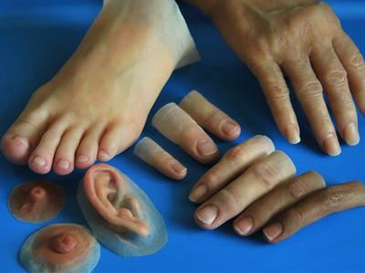

Nuestros servicios
Servicio técnico
Ofrecemos a nuestros clientes equipo médico de importación así como servicios profesionales para el mantenimiento o
reparación del equipo médico que así lo requiera.
Contamos con un amplio stock de refacciones y accesorios para la realización de los servicios.
Tenemos también disponibles los accesorios que sus equipos requieran como son cables de paciente, sensores de oximetria,
brazaletes, focos para lámparas de quirófano y estuches de diagnóstico, etc.
Nos especializamos en el mantenimiento, reparación, reconstrucción y automatización de autoclaves y generadores de
vapor. Para ello contamos también con el más amplio stock de refacciones y accesorios como son: válvulas solenoides para
vapor, trampas de vapor, válvulas de secado, Kits para el mantenimiento de válvulas solenoides, válvulas check, válvulas
de seguridad, filtros, empaques para cualquier marca de autoclave, parrillas para cargar el material a esterilizar,
carros para introducir el material al interior del autoclave, controles automáticos para adaptarse a cualquier equipo,
generadores de vapor automáticos de 10, 15 y hasta 25 mil watts, estos últimos para las autoclaves más grandes. Y para
nuestros generadores de vapor contamos con cualquier refaccion que estos ocupen principalmente las resistencias
eléctricas.
Equipo médico
Cámara 1488HD Stryker
- Resolución 1920 x 1080p
- 3 Chips CMOS
- 9 Especialidades
Cámara IM800 TrueHD Conmed
- Resolución 1920 x 1080p
- 3 Chips CMOS / F2.8
- Filtro para Huesos y Tejidos
MONITOR SIGNOS VITALES MOD. UMEC10 MINDRAY
- Pantalla Táctil de 10.4" LED HD
- Bateria de +4 horas de duración
- Parámetros: ECG, SPO2, TEMP, NIBP 1200 horas, 1800 alarmas
Monitor LED 4K Sony Medical
- Monitor LED 4K de 31"
- Resolución 4096 x 2160p
- Brillo de Imagen 770 cd/m2
- Entradas: DVI-D, SDI, HDMI
Prótesis y ortesis
Contáctanos para cotizar tu propia prótesis llenando el formulario.
Placas para trauma
El sistema de placas para antebrazo anatómico de la parte media de Acumed, ofrece mejoras marcadas sobre las placas rectas tradicionales. El sistema de antebrazo se puede usar para tratar fracturas, fusiones y osteotomías del radio y el cúbito. También se puede usar junto con el sistema de varillas de antebrazo Acumed para un abordaje menos invasivo de ambas fracturas óseas de la región diafisaria. El sistema de placas de antebrazo anatómico de la parte media, incluye placas de medias de cúbito, placas medias volares y placas medias dorsolaterales de radio.